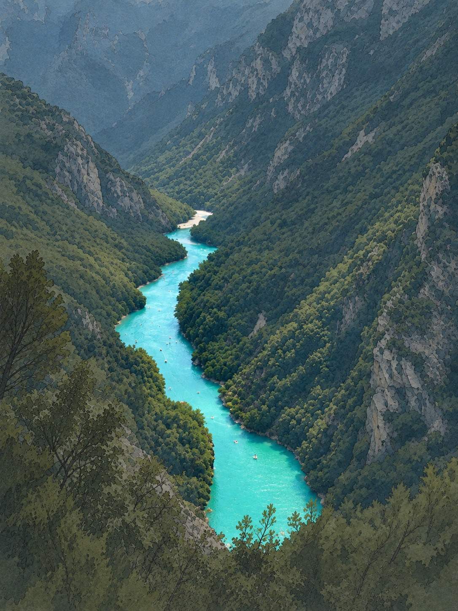

Calculators for planning and interpreting radon surveys in rivers and streams, and resources for the FINIFLUX model.
Radon-222 is rich in groundwater and scarce in rivers. Along a stream it degasses and decays, and it rises again wherever groundwater flows in. Measured point by point, it maps where groundwater reaches the river.

Quick calculations for planning radon surveys and interpreting field data.
The finite-element radon mass-balance model for groundwater discharge and hyporheic exchange.